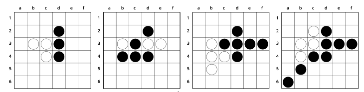
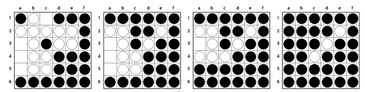

|
This tutorial walks through a synchronous single-thread single-GPU (read malnourished) game-agnostic implementation of the recent AlphaGo Zero paper by DeepMind. It's a beautiful piece of work that trains an agent for the game of Go through pure self-play without any human knowledge except the rules of the game. The methods are fairly simple compared to previous papers by DeepMind, and AlphaGo Zero ends up beating AlphaGo (trained using data from expert games and beat the best human Go players) convincingly. Recently, DeepMind published a preprint of Alpha Zero on arXiv that extends AlphaGo Zero methods to Chess and Shogi. The aim of this post is to distil out the key ideas from the AlphaGo Zero paper and understand them concretely through code. It assumes basic familiarity with machine learning and reinforcement learning concepts, and should be accessible if you understand neural network basics and Monte Carlo Tree Search. Before starting out (or after finishing this tutorial), I would recommend reading the original paper. It's well-written, very readable and has beautiful illustrations! AlphaGo Zero is trained by self-play reinforcement learning. It combines a neural network and Monte Carlo Tree Search in an elegant policy iteration framework to achieve stable learning. But that's just words- let's dive into the details straightaway. Unsurprisingly, there's a neural network at the core of things. The neural network \( f_\theta \) is parameterised by \( \theta \) and takes as input the state \(s\) of the board. It has two outputs: a continuous value of the board state \(v_\theta(s) \in [-1,1]\) from the perspective of the current player, and a policy \(\vec{p}_\theta(s)\) that is a probability vector over all possible actions. When training the network, at the end of each game of self-play, the neural network is provided training examples of the form \( (s_t, \vec{\pi}_t, z_t) \). \( \vec{\pi}_t \) is an estimate of the policy from state \(s_t\) (we'll get to how \(\vec{\pi}_t\) is arrived at in the next section), and \(z_t \in \{-1,1\}\) is the final outcome of the game from the perspective of the player at \(s_t\) (+1 if the player wins, -1 if the player loses). The neural network is then trained to minimise the following loss function (excluding regularisation terms): $$ l = \sum_t (v_\theta(s_t) - z_t)^2 - \vec{\pi}_t \cdot \log(\vec{p}_\theta(s_t)) $$ The underlying idea is that over time, the network will learn what states eventually lead to wins (or losses). In addition, learning the policy would give a good estimate of what the best action is from a given state. The neural network architecture in general would depend on the game. Most board games such as Go can use a multi-layer CNN architecture. In the paper by DeepMind, they use 20 residual blocks, each with 2 convolutional layers. I was able to get a 4-layer CNN network followed by a few feedforward layers to work for 6x6 Othello. Given a state \(s\), the neural network provides an estimate of the policy \(\vec{p}_\theta\). During the training phase, we wish to improve these estimates. This is accomplished using a Monte Carlo Tree Search (MCTS). In the search tree, each node represents a board configuration. A directed edge exists between two nodes \(i \rightarrow j\) if a valid action can cause state transition from state \(i\) to \(j\). Starting with an empty search tree, we expand the search tree one node (state) at a time. When a new node is encountered, instead of performing a rollout, the value of the new node is obtained from the neural network itself. This value is propagated up the search path. Let's sketch this out in more detail. For the tree search, we maintain the following:
After a few simulations, the \(N(s,a)\) values at the root provide a better approximation for the policy. The improved stochastic policy \(\vec{\pi}(s)\) is simply the normalised counts \(N(s,\cdot)/\sum_b(N(s,b))\). During self-play, we perform MCTS and pick a move by sampling a move from the improved policy \(\vec{\pi}(s)\). Below is a high-level implementation of one simulation of the search algorithm. Note that we return the negative value of the state. This is because alternate levels in the search tree are from the perspective of different players. Since \(v \in [-1,1]\), \(-v\) is the value of the current board from the perspective of the other player. Believe it or not, we now have all elements required to train our unsupervised game playing agent! Learning through self-play is essentially a policy iteration algorithm- we play games and compute Q-values using our current policy (the neural network in this case), and then update our policy using the computed statistics. Here is the complete training algorithm. We initialise our neural network with random weights, thus starting with a random policy and value network. In each iteration of our algorithm, we play a number of games of self-play. In each turn of a game, we perform a fixed number of MCTS simulations starting from the current state \(s_t\). We pick a move by sampling from the improved policy \(\vec{\pi}_t\). This gives us a training example \((s_t, \vec{\pi}_t, \_)\). The reward \(\_\) is filled in at the end of the game: +1 if the current player eventually wins the game, else -1. The search tree is preserved during a game. At the end of the iteration, the neural network is trained with the obtained training examples. The old and the new networks are pit against each other. If the new network wins more than a set threshold fraction of games (55% in the DeepMind paper), the network is updated to the new network. Otherwise, we conduct another iteration to augment the training examples. And that's it! Somewhat magically, the network improves almost every iteration and learns to play the game better. The high-level code for the complete training algorithm is provided below. We trained an agent for the game of Othello for a 6x6 board on a single GPU. Each iteration consisted of 100 episodes of self-play and each MCTS used 25 simulations. Note that this is orders of magnitude smaller than the computation used in the AlphaGo paper (25000 episodes per iteration, 1600 simulations per turn). The model took around 3 days (80 iterations) for training to saturate on an NVIDIA Tesla K80 GPU. We evaluated the model against random and greedy baselines, as well as a minimax agent and humans. It performed pretty well and even picked up some common strategies used by humans.   This post provides an overview of the key ideas in the AlphaGo Zero paper and excludes finer details for the sake of clarity. The AlphaGo paper describes some additional details in their implementation. Some of them are:
This code presented in this tutorial provides a high-level overview of the algorithms involved. A complete game and framework independent implementation can be found in this GitHub repo. It contains an example implementation for the game of Othello in PyTorch, Keras and TensorFlow. The comments thread below is not very active anymore. Feel free to leave comments/suggestions :). For burning questions, consider posting an Issue on GitHub. |